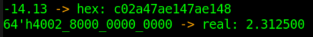
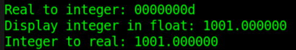

Keywords: fixed-point number, floating-point number, $realtobits, $bitstoreal
This section mainly introduces the functions for converting between real and integer numbers: $realtobits and $bitstoreal, and also explains how a real-type variable (same as double float in C language) is represented using a multi-bit binary code.
Binary representation of decimals
Binary representation of decimals
When a decimal integer is represented in binary, the operation of dividing the data by 2 and taking the remainder is required.
When the fractional part is represented in binary, the opposite is true: the data is multiplied by 2, and then it is checked whether the integer part is greater than 1.
The process of obtaining the binary representation of the fractional part 0.3125 of 2.3125 is as follows:
| Calculation process | Judgment | Binary bit |
|---|---|---|
| 0.3125 x 2 = 0.625 | < 1 | 0 |
| 0.625 x 2 = 1.25 | ≥ 1 | 1 |
| (1.25 - 1) x 2 = 0.5 | < 1 | 0 |
| 0.5 x 2 = 1 | ≥ 1 | 1 |
| Result: the decimal fraction is represented by a 4-bit binary number | stop | 0101 |
Therefore, the binary representation of 2.3125 is dec2bin(2.3125) = bin(10.0101). Here the decimal point is only used to distinguish the position of the fractional part, i.e., the fractional part is represented by a 4-bit binary code. In practice, the decimal point marker does not exist.
When representing a decimal fraction in binary, there is also a quick method. If the fractional part is represented by N bits, then the value represented by the binary representation of a decimal number num is:
dec2bin(num) = bin(num x 2^N )
For example, the conversion process of decimal number 2.3125 is as follows:
2.3125 x 2 ^ 4 = 37 = bin(100101)
With a fractional part width of 4, dec2bin(2.3125) = bin(10.0101).
Converting binary to decimal fractions
When converting a binary integer to decimal, it is necessary to perform bit-by-bit multiplication using base-2 exponents and accumulate the results.
When converting a binary fraction to decimal, it is necessary to perform bit-by-bit multiplication using base-1/2 exponents and accumulate the results.
For example, when the fractional part width is 4, the decimal fraction represented by the fractional part of bin(11.1001) is:
bin2dec(1001) = 1 x 2^(-1) + 0 x 2^(-2) + 0 x 2^(-3) + 1 x 2^(-4) = 0. 5625
Then the binary fraction bin(11.1001) with a fractional part width of 4 represents the decimal fraction 3.5626.
The quick method for converting a binary fraction num with an N-bit fractional part to decimal is:
bin2dec(num) = num / 2^N
For example, the calculation process for the fraction represented by bin(11.1001) is:
bin(11.1001) = bin(111001) / (2^4) = 57/16 = 3.5625 。
In fact, whether a multi-bit variable represents an integer or a fraction is not distinguished by the Verilog compiler; operations are only artificially performed at the fractional level.
Floating-point number representation
A fixed-point number is a number whose decimal point position is fixed. An integer is a kind of fixed-point number because the decimal point is always after the last digit.
A floating-point number is a number whose decimal point position is not fixed. For example, 1.2 x 1.3 = 1.56; the decimal point position keeps floating, hence the name floating-point number.
Of course, the decimal point position of a fractional number can also be fixed, which is called a fixed-point decimal. However, this representation reduces the precision of the fraction. For example, if only one digit after the decimal point is fixed to represent the fraction, then 1.2 x 1.3 = 1.5, losing some data.
General representation of decimal floating-point numbers:
dec(num) = (-1) ^ S x M x (10^E );
S is the sign bit; when it is 1, it represents a negative number, and when it is 0, it represents a positive number.
E is the exponent part of the scale factor, expressed as an integer, called the exponent code. The exponent code indicates the position of the decimal point in the code word, thus determining the range of the floating-point number.
M is the fractional part, called the mantissa. The width of the mantissa determines the precision of the floating-point number.
For example, the number 100.0344 can be represented as:
1995.0907 = (-1) ^ 0 x 199.50907 x 10^1 （正数，尾数为199.50907, 阶码为1） = (-1) ^ 0 x 1.9950907 x 10^3 = (-1) ^ 0 x 0.19950907 x 10^ 4
Similarly, the general representation of binary floating-point numbers is:
dec(num) = (-1) ^ S x M x (2^E )
For example:
dec(2.3125) (十进制) = bin(10.0101)
= bin(10.0101) x 2^0
= bin(1.00101) x 2^1 (正数，尾数为 1.00101，阶码为 1）
= bin(0.100101) x 2^2
From the above, different representation methods of the same floating-point number have different mantissas and exponents. For ease of portability, in 1985, IEEE (Institute of Electrical and Electronics Engineers) proposed the IEEE-754 standard as a unified standard for floating-point number representation formats.
The IEEE-754 standard logically uses a triplet {S, E, M} to represent a floating-point number Num.
S represents the sign bit; 0 and 1 represent positive and negative numbers, respectively.
E represents the exponent part, called the biased exponent. To avoid positive and negative exponents, the biased exponent is obtained by adding a fixed offset to the exponent. Therefore, the exponent can be obtained from the biased exponent: E - 2^(W-1) + 1. W is the bit width of the biased exponent. The exponent base is 2.
M represents the mantissa. The highest bit of the mantissa is always 1, but the mantissa field does not store this bit; it only stores the fractional part. Therefore, the value represented by the mantissa is actually 1.M.
It is specified that single-precision floating-point numbers are stored in 4 bytes, and double-precision floating-point numbers are stored in 8 bytes. The diagram is as follows.

Single-precision format (32 bits): S sign bit is 1 bit wide; E exponent is 8 bits wide, with an exponent bias of 127 (7'h7F); M mantissa is 23 bits wide, representing the fraction, with the decimal point placed at the front of the mantissa field.
Double-precision format (64 bits): S sign bit is 1 bit wide; E exponent is 11 bits wide, with an exponent bias of 1023 (10'h3FF); M mantissa is 52 bits wide, representing the fraction, with the decimal point placed at the front of the mantissa field.
The true value of a 32-bit floating-point number N can be expressed as:
Num = (-1)^S × (1.M) × 2 ^(E-127)
The true value of a 64-bit floating-point number N can be expressed as:
Num = (-1)^S × (1.M) × 2 ^(E-1023)
For example, the decimal fraction represented by the binary code 64'h4002_8000_0000_0000 corresponding to a double-precision floating-point number is:
Num = (-1)^0 x (1+ 8'h28/2**8) x 2^((12'h400 & 11'h7FF)-1023) = 2.3125
The above mantissa calculation process omits a series of trailing "0"s and only takes the first 8 significant bits.
For example, the binary representation process of the double-precision floating-point number -13.14 is:
| Need 1 bit for the sign bit | S = 1 |
|---|---|
| Need 4 bits to represent the integer | 13 = bin(1101) = bin(1.101) x 2^3 |
| Need 11 bits to represent the exponent | E = 3 + 1023 = 11'h402 |
| Need (52-3) bits to represent the fraction | 0.14 * 2^(52-3) = 78812993478983.688 ≈ 78812993478984 = 49'h47ae147ae148 |
| Need 52 bits for the mantissa: integrate the two fractional parts | M = (bin(101)<<49) + 49'h47ae147ae148 = 52'ha47ae147ae148 |
| Floating-point number binary code | {S, E, M} = 32'hc02a_47ae_147a_e148 |
The real-type variable in Verilog is exactly the double-precision floating-point variable with a 64-bit width under the IEEE-754 standard.
Conversion functions
| System task invocation | Task description |
|---|---|
| int_val = $rtoi( real_val ) ; | Convert real number real_val to integer int_val For example, 3.14 -> 3 |
| real_val = $itor( int_val ) ; | Convert integer int_vla to real number real_val For example, 3 -> 3.0 |
| vec_val = $realtobits( real_val ) ; | Convert real number to multi-bit register vector The register stores double-precision floating-point data according to the IEEE-754 standard |
| real_val = $bitstoreal( vec_val ) ; | Convert multi-bit register vector to real number |
The generation or conversion process of real-type variables should comply with the IEEE Std 754-1985 [B1] standard.
Use $realtobits and $bitstoreal to convert data:
Example
reg [63:0] num_bits ;
initial begin
num_bits = 64'h4002_8000_0000_0000 ;
$display("-14.13 -> hex: %h", $realtobits(-13.14));
$display("64'h4002_8000_0000_0000 -> real: %f", $bitstoreal(num_bits));
end
The simulation log is as follows, and it can be seen that the conversion is correct.

Use $itor and $rtoi to perform format conversion on data:
Example
initial begin
$display();
$display("Real to integer: %h", $rtoi(13.14));
$display("Display integer in float: %f", 1001);
$display("Integer to real: %f", $itor(1001));
end
From the following simulation log, when $rtoi converts the real number (13.14) to the integer (4'hd), it only truncates the integer part. When $itor converts the integer (1001) to the real number (1001.000000), there seems to be no change.

In fact, the function of $rtoi and $itor is to change the storage mode of the variable.
For example, when 14 is stored as an integer variable, it is represented as 32'h1110, and if stored as a real-type variable, it is represented as 64h402c_0000_0000_0000.
Click to share notes
<p style="font-size:14px;">Notes should be an extension of the content of this article!</p><br> <p style="font-size:12px;"><a href="../tougao.html" target="_blank">To submit an article, click here</a></p> <p style="font-size:14px;"><a href="./runoob-user-test-intro.html" target="_blank">How to get a registration invitation code</a></p> <h3 class="text-muted"><i class="fa fa-info-circle" aria-hidden="true"></i> You must <a href=".." class="runoob-pop">log in</a> before sharing notes!</h3> <p><a href="./runoob-user-test-intro.html" target="_blank">How to get a registration invitation code</a></p>